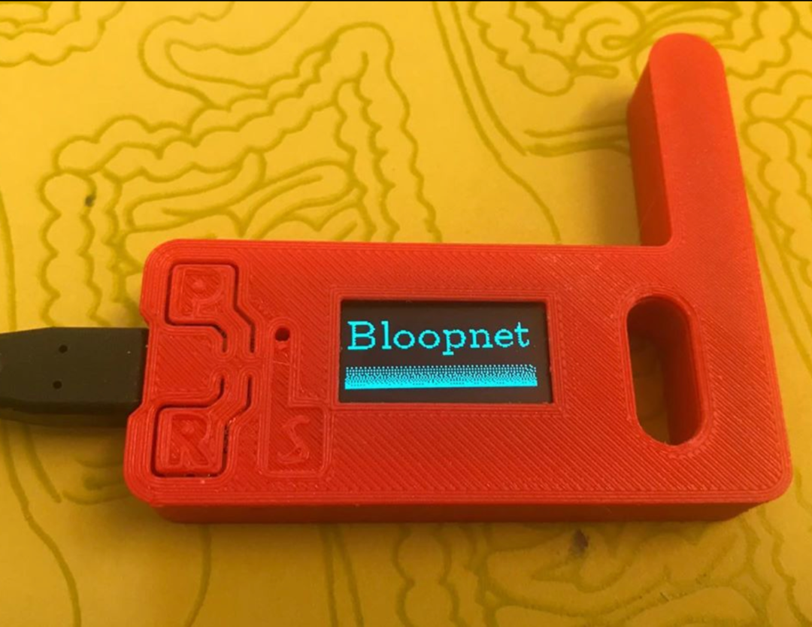

Better than Twitter because it's worse.
Bloopnet is an experiment with LoRa long range radios. The Raspberry Pi-based Bloop server waits for a "Got a bloop?" request from a client device (shown above). Bloops are text in a 5-bit encoded format similar to the original Baudot telegraph protocol from the 1870s. A single bloop can be around 1500 words, enough for a long poem or a super short story.